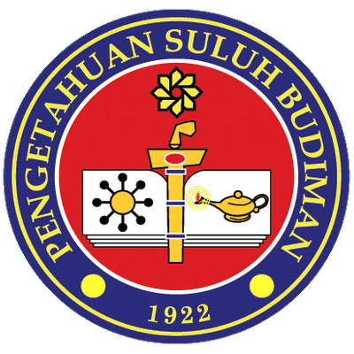

Diploma in Computer Science Student at Sultan Idris Education University

Diploma in Computer Science
2024 – 2026 (Expected)
Current CGPA: 3.98
I’m currently pursuing a diploma in Computer Science at UPSI, where I’ve developed strong foundations in data, programming logic, and system thinking. I particularly enjoy number-related courses and theoretical subjects that explain how computers actually work, from architecture to memory systems.
Secondary School
Graduated with First Class
CGPA: 3.93 | SPM: 7As
At MJSC Kuala Berang, I served as a Student Representative Council (Exco Beraue Akademik), where I helped coordinate academic initiatives and student support activities. This experience helped me grow as a student leader and reinforced my love for education and peer learning.